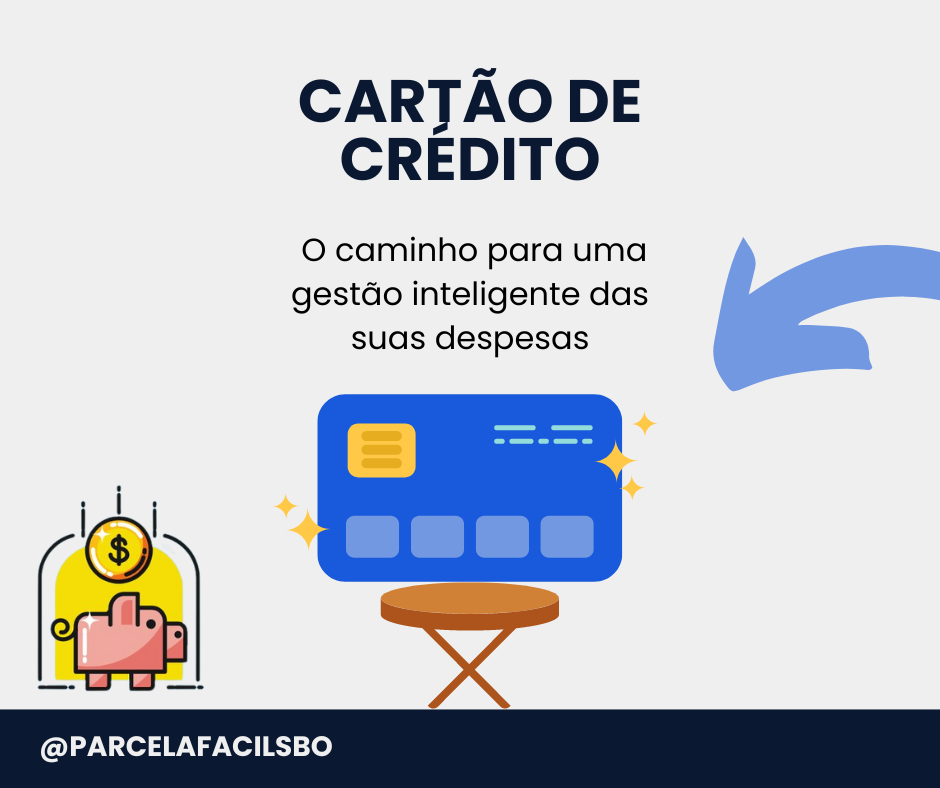
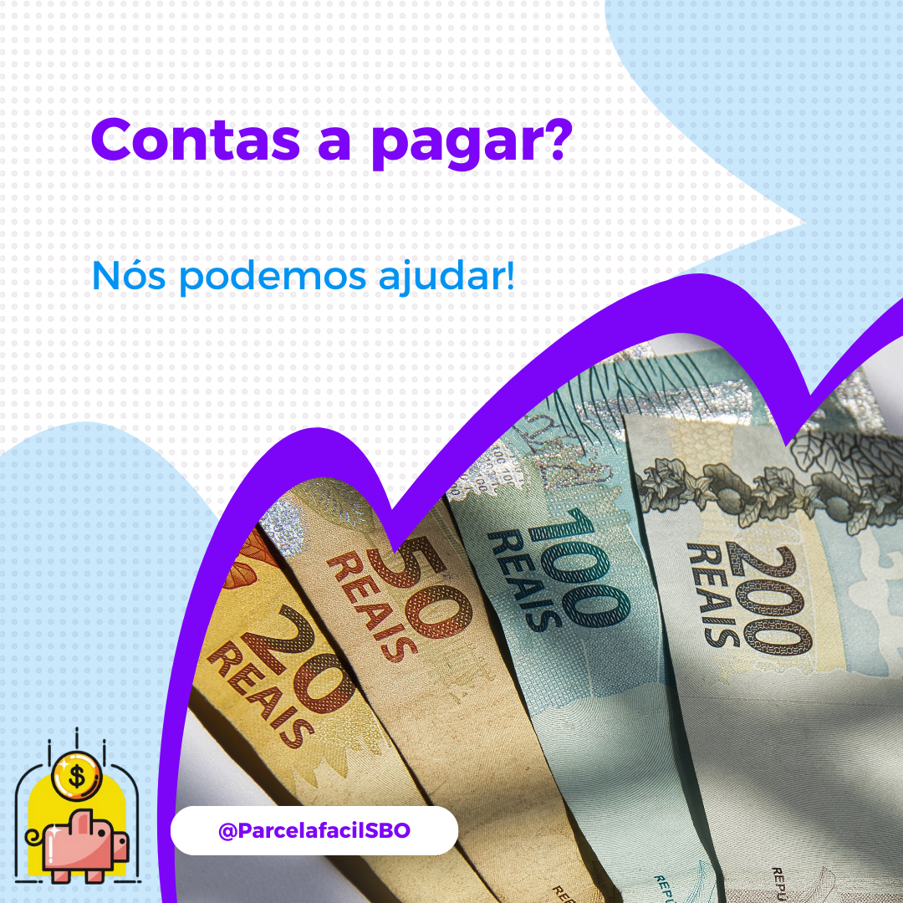
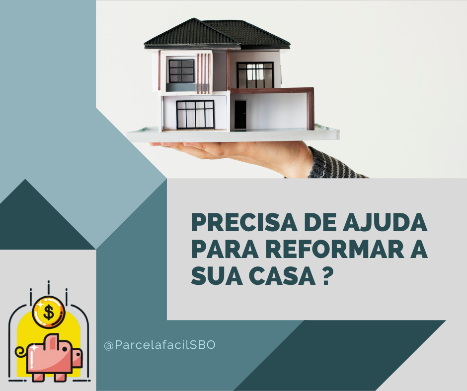
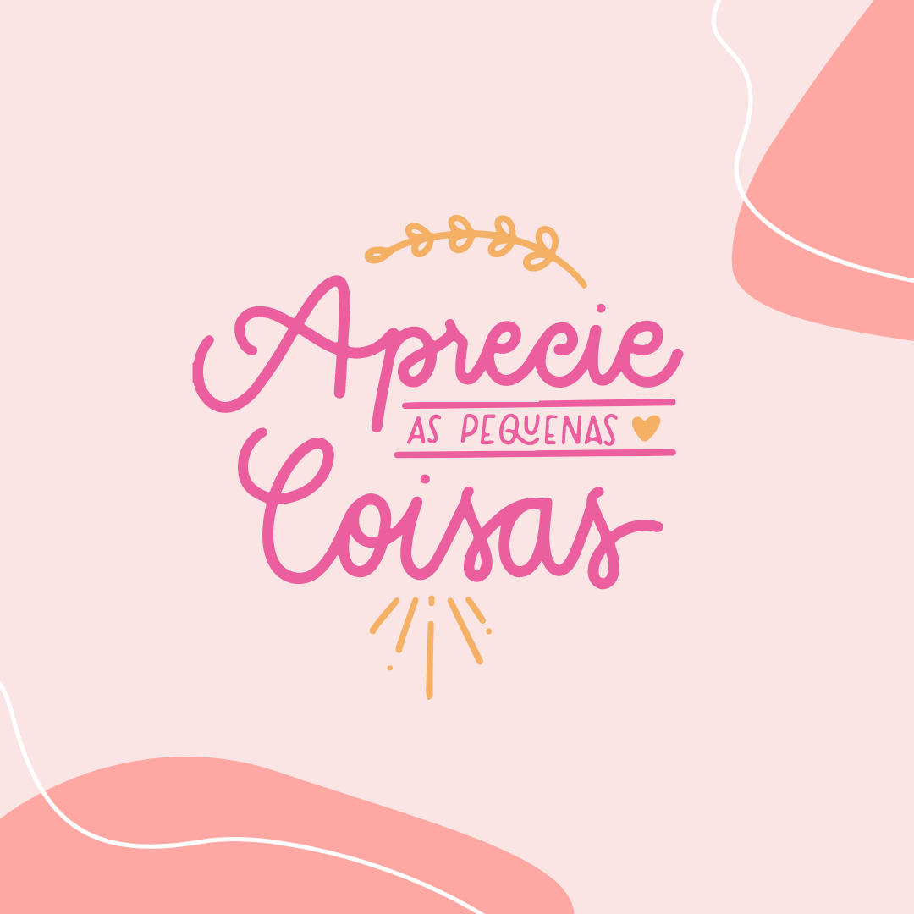
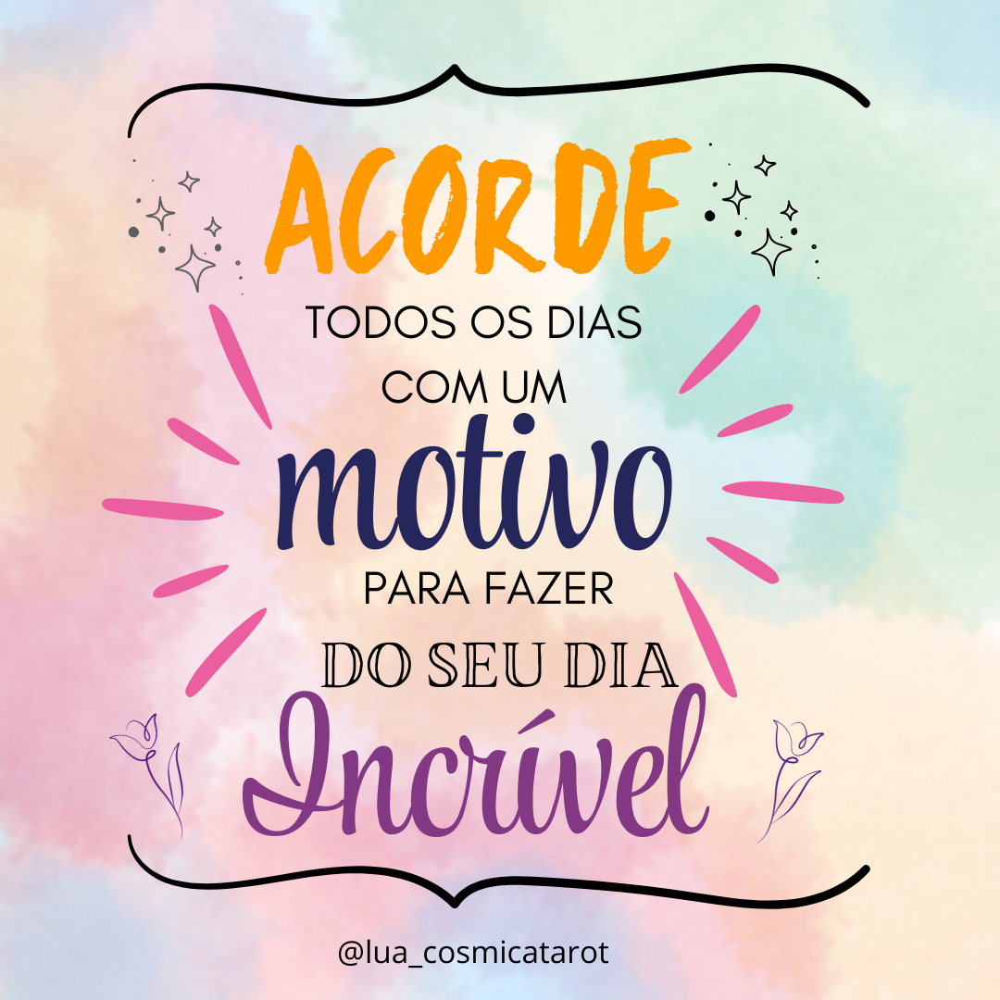
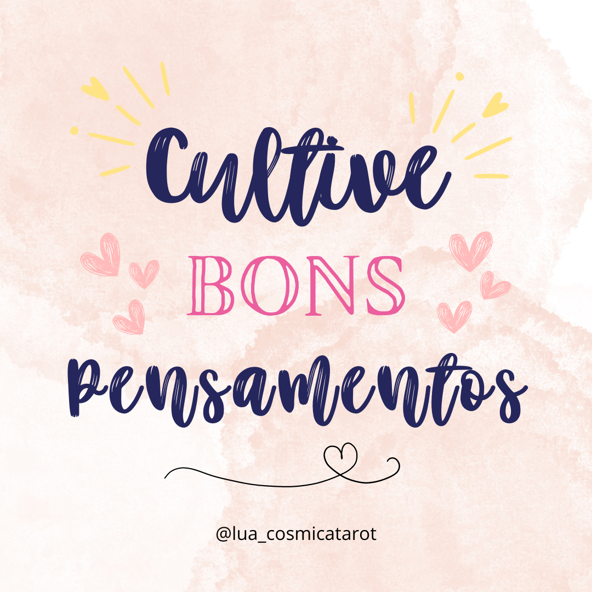

Profissional com sólida experiência em Customer Experience, Customer Success, Enablement e Operações, atuando em empresas de tecnologia, segurança da informação e plataformas educacionais.
Atuo conectando produto, clientes e times internos, organizando processos, escalando atendimento com qualidade e produzindo conteúdos técnicos e educativos com foco em eficiência, resultado e experiência humanizada.
Tenho histórico comprovado de crescimento de responsabilidade, impacto mensurável em vendas, suporte e retenção, além de forte capacidade de traduzir complexidade técnica em comunicação clara e soluções práticas.
Experiência Profissional
Open Cybersecurity (Julho à Dezembro de 2025)
Conteúdo, Enablement, Marketing Técnico e Operações
Produção de conteúdos educacionais para o Vanta Learning em Português e Espanhol.
Criação de apresentações comerciais personalizadas adaptadas ao contexto de cada lead. Resultado: 5 clientes conquistados em menos de 5 meses.
Participação no evento Mind The Sec, com criação de mensagens direcionadas. Resultado: mínimo de 40 leads qualificados.
Migração do suporte do Intercom para solução mais enxuta utilizando Linear.
Criação de material de handover para alinhamento de escopo e funcionalidades.
Mobiliza (Maio de 2020 à Abril de 2024)
Customer Experience, Suporte, Automação e Processos
Implantação da plataforma LMS para clientes do Applique (SCORM).
Criação de chatbot com fluxos direcionados para alunos e admins. Resultado: redução de 50% em atendimentos humanos.
Manutenção de NPS acima de 95% com SLA e resolução efetiva.
Sistema inteligente de priorização de tickets em parceria com desenvolvimento.
Materiais institucionais e marketing interno com Canva.
Qi Network – Google Cloud Partner (Janeiro de 2018 à Março de 2020)
Customer Success, Pós-vendas, Pré-vendas e Operações Comerciais
Implementação do CS no Brasil com aumento progressivo de responsabilidade.
Atuação com grandes clientes e reuniões mensais com foco consultivo.
Gestão completa do ciclo do cliente com foco em renovação. Resultado: 100% das metas atingidas.
Documentação completa no Salesforce, assegurando previsibilidade e alinhamento.
Atuação em pré-vendas com qualificação BANT, eventos e certificação G Suite.
Formação Acadêmica e Cursos
Formação Acadêmica
MBA em Gestão de Pessoas e Liderança – Faculdade Dominius (2022 – 2023)
Graduação em Gestão de Recursos Humanos – Universidade Estácio de Sá (2016 – 2018)
Tecnólogo em Gestão de Sistemas de Informação – IFSC (2007 – 2008)
Formação Complementar
Curso de Locução de Rádio – Comunicação clara e gravação de conteúdos educativos
Curso de Dashboards – Karen Abecia – Análise avançada de dados e métricas
Design de Conversas para Chatbots – Criação de fluxos, linguagem natural e UX
Artificial Intelligence Essentials V2 – Fundamentos de IA aplicada a negócios
Portfólio Visual
Projetos Comerciais – Parcela Fácil SBO
Peças de comunicação para redes sociais com foco em educação financeira e engajamento.



Projetos Criativos – Lua Cósmica Tarot
Conteúdo visual para expansão de consciência e mentalidade via tarot.



Projetos Autorais – Myagui Lembranças Artesanais
Peças gráficas para divulgação de produtos artesanais com apelo afetivo.
.png)
.png)